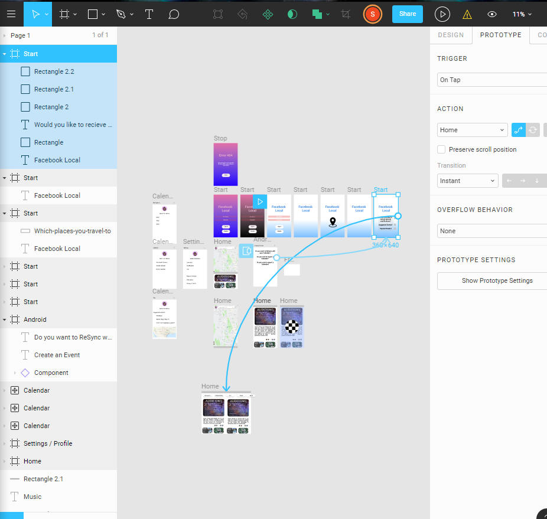

Overview
Time: December 2018
Project : Develop a mockup framework of an app I am familiar with in 48 hours.
Role : Product Designer
Background :
Facebook local is a mobile social media app that
allows users to find Facebook events occurring near the user. While this app
has the potential to provide people with spontaneous outings, access to
unknown events and plan an event solely from their cell phone, it doesn’t
seem to be getting the kind of popularity one would expect. While it is
difficult to compare the main mobile Facebook app (which holds ~90 million reviews on the Google Play Store) to its partner apps
such as Facebook Messenger(which holds ~62
million reviews on the Google Play Store), apps like Facebook Local are
nearly unheard of (with only ~10,000
Reviews on the Google Play Store). It is shocking to see that such a useful
app is being ignored by the general public, so I am going to try to find a
potential reason.
A Case Study on my findings during a 48-hour design
challenge. I decided to analyze an app that presently existed but didn't
hold more than 10k reviews on the Google Play Store. I chose this because
reviews are often written when someone has an extremely good or bad
experience using an app. And on average only 15% of the people that download
an app will leave a review without a special reason. Therefore, if an app
had a very low number of reviews, it could mean that the app could have room
for revision or another app on the market fill the app's niche better. I
ultimately was surprised when I discovered how Facebook Local only had about
9K reviews on it when its parent and sibling apps such as Facebook Messenger
held millions of reviews. So, I decided to dive in and learn as much as I
could about the interface associated with Facebook Local.
Purpose of the project - To learn what could improve the
number of people using Facebook Local and get a larger number of reviews.
Objective - I needed to develop: a wireframe that worked
just like Facebook Local, conduct research on negative reviews, and create a
second wireframe using the results from the research.
Approach - I decided to go through my design process the
way I have on my previous projects: Learn, Explore, Select, Develop,
Refine, Deliver.
Learn
about the users, the app, other competitive products, and modern research.
Now, as
expected, this app is meant to be used directly in conjunction with
Facebook. So, the app relies heavily on people informing people of Local
events based on their interests and liked groups. However, despite the
app covering many potential needs of a user, it does have the ability to
overwhelm a user. For instance, after surveying some engineering students, I
learned many students cannot keep their main Facebook app's notifications on
because they know they will get sucked into seeing live feed and updates and
stories that they would rather see later. This fear of viewing
certain notifications prevents them from seeing all possible notifications
such as local events occurring in one's neighborhood.
This
means that the main people that would use an app like Facebook local are the
people that would also not want to view every single notification that comes
though as it comes though. This type of app could be useful to everyone with
access to Facebook. Whether it be people who work at a desk all day or
students that need to prevent procrastination. The target audience for this
app could possibly be any person that wants to be involved in their
community but is also too busy to view every Facebook notification. During
my survey I found a few additional answers, but for the focus of this
48-hour challenge, this will be the main group I will be targeting: busy
young adults and adolescents that use Facebook regularly.
So, it
is possible that Facebook developed this app fully aware of that issue.
After all, it would be an effective way to get people to stay on Facebook
even if they can't spend the time to use the entire app. But no matter the
reason, let's discuss the apps purpose. Its main functions are it has all
the capabilities of Facebook's events pages but all on a mobile device.
Every function and feature that events on Facebook have can be found here.
It allows users to see which of their friends are going to a certain event,
display interests in possible events, and ultimately discover new events.
For the purpose of these 48 hours, these are the functions I will focus on.
Competitive Products
Due to
the niche market of this product, I will ignore competitors for this case
study outside of Facebook.
So, I
looked for some user feedback that could be remedied by some beneficial
product design alterations. Now some of the complaints for the project were
somewhat unfixable for this challenge. For instance, several people didn’t
like how they couldn’t find any events in their rural hometowns located on
the side of a mountain while and others had issues with the app crashing and
going slow. Without knowing the nature of the events in every given area or
the code layout of the app, I am incapable of making an improved product on
those two fronts. But here were some reviews that were common that I thought
were very fixable.
1.
“Wow what a
letdown! This app has so much potential! What happened? Very leggy; takes
ten times as long to scroll. Searching?! Nope, nothing popped up for my
searches, however going back to FB I can find what I was searching for. I
really wanted to like this. Hopefully there is a revamp soon.”
2.
“Took 5 minutes to
install and open. Looked around the app for 5 minutes. Slow. Incoherent. I
really wanted to like this because I like the idea, but it just doesn't
serve its purpose well. So, I uninstalled. Maybe in a few months I'll
reinstall and see if things have improved.
3.
“Very failure app.
If you can mix Facebook events with calendar features. Then it can be good.
But right now. It's worst. I also can't change my calendar view in here”
4.
“No category for
conventions or Comic-Con!! Not easy to find any comic book convention,
anywhere. Only get 1 or 2 results. Conventions are huge events and fall
under multiple categories like arts, literature, shopping etc. Needs its own
category!!!”
5.
“My events, popular
events, suggested events, just show me all the events in one list with some
filters. That's all. Gone back to Facebook events page. Stupid app”
6.
“A whole app but it
still is worthless. Let people search by day, distance away, and show on
map. Not too complicated.”
So I looked for some user feedback that could be remedied by some beneficial
product design alterations. Now some of the complaints for the project were
somewhat unfixable for this challenge. For instance, several people didn’t
like how they couldn’t find any events in their rural hometowns located on
the side of a mountain while and others had issues with the app crashing and
going slow. Without knowing the nature of the events in every given area or
the code layout of the app, I am incapable of making an improved product on
those two fronts. But here were some reviews that were common that I thought
were very fixable.
1.
“Wow
what a letdown! This app has so much potential! What happened? Very leggy;
takes ten times as long to scroll. Searching?! Nope, nothing popped up for
my searches, however going back to FB I can find what I was searching for. I
really wanted to like this. Hopefully there is a revamp soon.”
2.
“Took 5 minutes to install and open. Looked around the app for 5 minutes.
Slow. Incoherent. I really wanted to like this because I like the idea, but
it just doesn't serve its purpose well. So I uninstalled. Maybe in a few
months I'll reinstall and see if things have improved.
3.
“Very failure app. If you can mix Facebook events with calendar features.
Then it can be good. But right now. It's worst. I also can't change my
calendar view in here”
4.
“No category for conventions or Comic-Con!! Not easy to find any comic book
convention, anywhere. Only get 1 or 2 results. Conventions are huge events
and fall under multiple categories like arts, literature, shopping etc.
Needs its own category!!!”
5.
“My events, popular events, suggested events, just show me all the events in
one list with some filters. That's all. Gone back to Facebook events page.
Stupid app”
6.
“A whole app but it still is worthless. Let people search by day, distance
away, and show on map. Not too complicated.”
Too similar to Facebook
for people to recommend
Takes too long to scroll
down for relevant events.
Can’t sync Google calendar
with Facebook Events directly
New category for
Conventions and Cultural events
Create the Option for a
color scheme to be light or dark.
More filters! Days, price,
Open or closed now, rating, busy or not busy
Write solutions to pain points and include screenshots. Try to include
animations.
1.
Too similar to
Facebook for people to recommend
·
There are a couple
of ways to go about making look different, but changing the color scheme
seems the easiest.
·
Like Smash vs Glee;
this app needs a darker or lighter tone
Some of the reviews pointed out how they
uninstalled the app extremely close to the when they installed it. That
means that we only have a short amount of time for people to try this app
before running back to the original product. So the first thing that should
be changed is the title screen. I wish that this app had a title screen or a
loading screen to help prelude the apps function while it’s gathering data
instead of showing the signature place marker icon. It is so common with
competitors different loading screen may give it a different vibe within the
first few minutes of usage.
I chose a white background with a blue highlight
for my color scheme since it has a slight remanence of Facebook’s color
scheme while lacking the sharp edges associated with the main Facebook Apps.
And since fades in color make images seem more welcoming on time tested art,
so it seemed like an appropriate introduction to the main app.(
https://cen.acs.org/articles/94/i5/Van-Goghs-Fading-Colors-Inspire.html
)
2.
No reason to get
others to download it
a.
·
Create a streak
system! Like going to a Health event once a week or a visit a convention
once a year. While this won’t get everyone in the Facebook community
involved, the ability to overcome something with someone else is a valid
method to get others informed of this app’s existence
(https://blog.stormid.com/the-psychology-of-sharing/).
·
Possibly a System
for how many events you go to with a certain friend may be a method. A more
practical solution is to make it so the app can also highlight if certain
friends will arrive at certain events. This system is more simple then the
streak system but basically all it does is create a highlight for each
person that has been to 5+ events with the present app user. That way,
people will be less likely to uninstall the app if this visibility function
is emphasized. After all, if you are going to an event that has 10 of your
Facebook friends, you may not care unless one of them is one of your closer
friends. This perk would be something that the present Facebook Event system
is lacking, and it could be beneficial to this app
·
This app may also
need an improved marketing plan. When I google “Facebook Local” with quotes
over the past year, only 170 results appeared. And often they weren’t about
Facebook Local; search engines typically just found results that included
the phrase “Facebook. Local”


The other issues were much easier to fix.
3.
Takes too long to
scroll down for relevant events.

·
On launch, let the
user preference what kinds of events they want to see (Suggested, popular,
etc.)
·
On launch and in
Options, allow a user to preference what groups or pages events they would
like to see first
·
In Options, allow a
user to choose not to have a certain type of event (like fitness) if they
chose to
4.
Can’t sync Google
calendar with Facebook Events directly
·
Export .csv or .isc
file button
·
Most popular
calendar software is designed to can import .csv or .ics files This isn’t
much of a “Design” flaw since Facebook does have a calendar that allows you
to reverse sync products, but it could be more explicit.

5.
New categories and
filters should be included. For Special Categories such as Conventions and
Cultural events. Special filters such as “Open / Close Hours”
·
Straight forward.
It will go next to arts
·
Some categories
overlap like cultural and art or Conventions and literature
·
This is important
since many conventions exist and don’t have the word “Convention” in their
name.

1.
1)
As a programmer, I understand that NONE of the
changes I have suggested are very “simple” or easy to make. Anyone can be an
anonymous critic, but the true critics are the ones that analyze the beauty
of the program that was developed. I will remember this because I personally
found the user design of Facebook Local as an aspiration more then an
assist.
2.
2) As
an engineer, I know that many of these complaints aren’t “quantifiable” as
design requirements. So, I will be sure to always take my project guidelines
and quantify them from the get-go to give me some type of goal to aim for as
I design.